Proyecto: Mesero Robot
Hoy en día existen diversos robots para cumplir tareas específicas. En el área de restaurantes existen los robots meseros autónomos. Éstos robots permiten servir mesas y encontrar su camino por el restaurant.
Entre los ejemplos disponibles esta el Segway ServeBot S1(“Restaurant Service Robot - Segway Robotics,” 2024) y el Bellabot (“Smart Delivery Robot-Pudu Robotics,” n.d.).
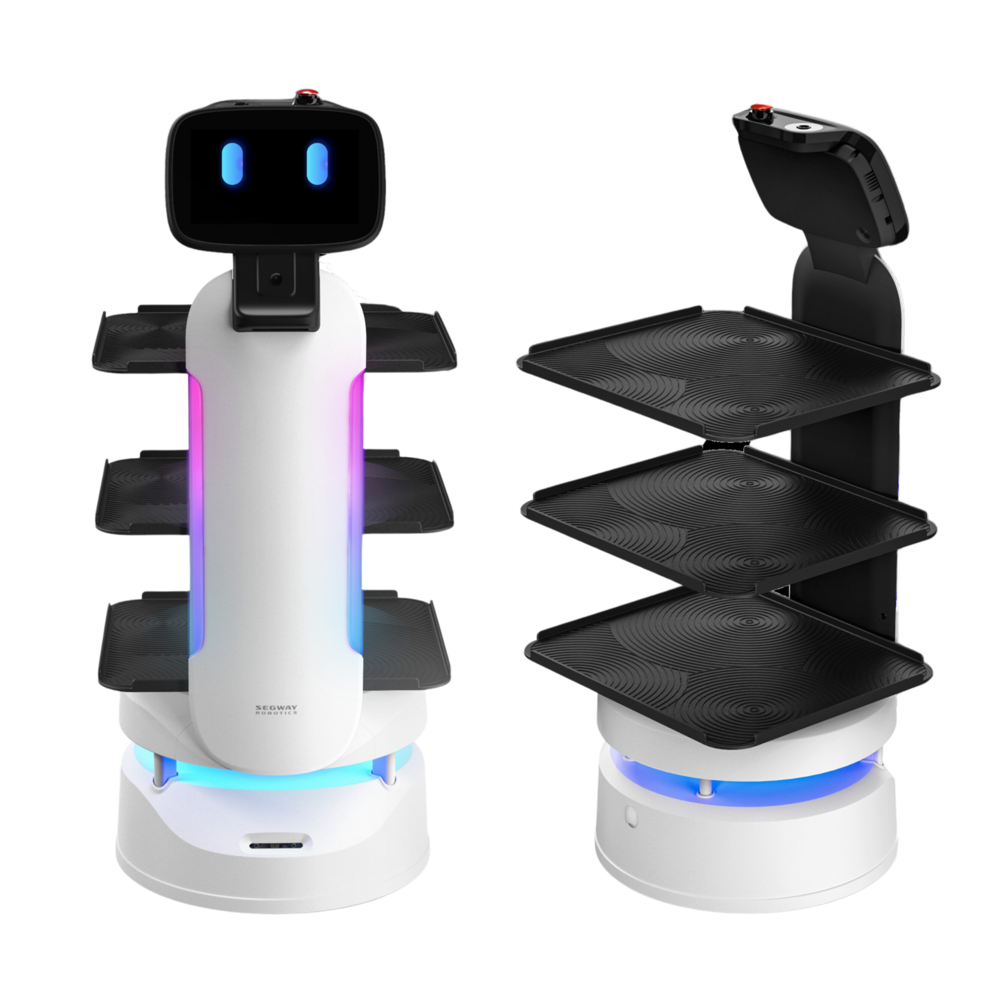
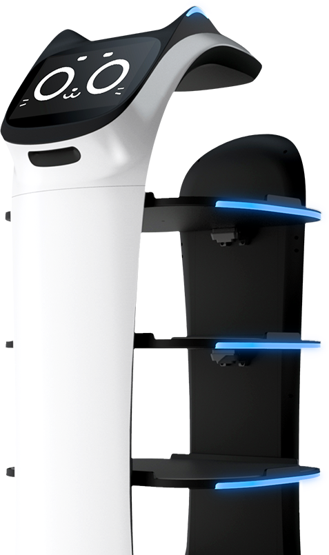
Estos robots son de alta tecnología y cuentan con sensores e inteligencia artificial muy sofisticada. Lo que los hace tener un precio prohibitivo para la mayoría de los restaurantes.
Pilotos OriHime
En Japón existe el concepto de "Avatar Robot Café". Donde un restaurant/café es atentido por avatares robots. Es decir, robots controlados por humanos remotamente. Estos robots no cuentan con IA debido a que se busca integrar a personas con dificultades motoras u otros problemas que les impide integrarse a la sociedad en trabajos tradicionales.
Entre los avatares robots se puede encontrar meseros y baristas.
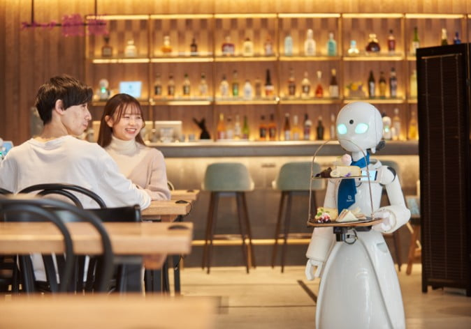
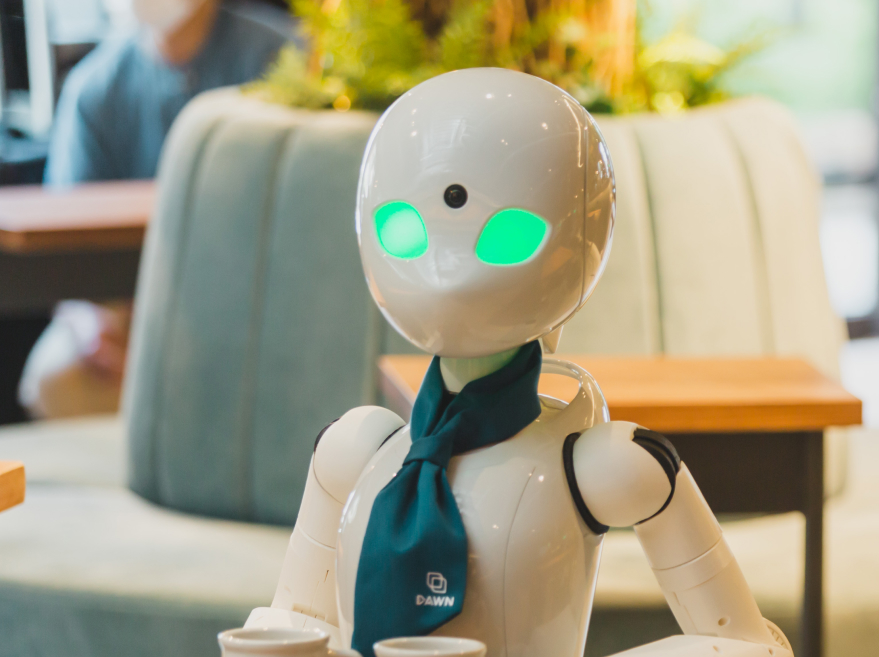
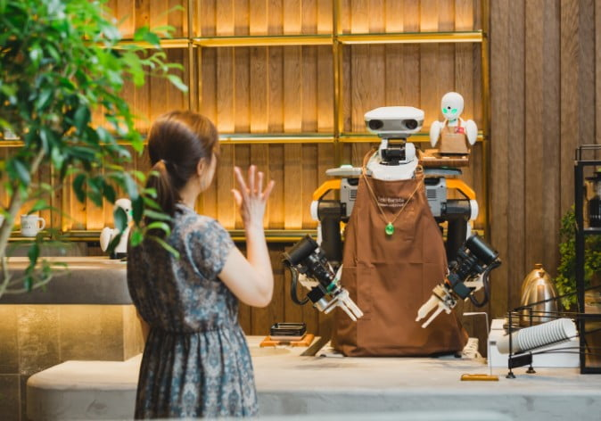
Son controlados remotamente con una aplicación de tablet smartphone.
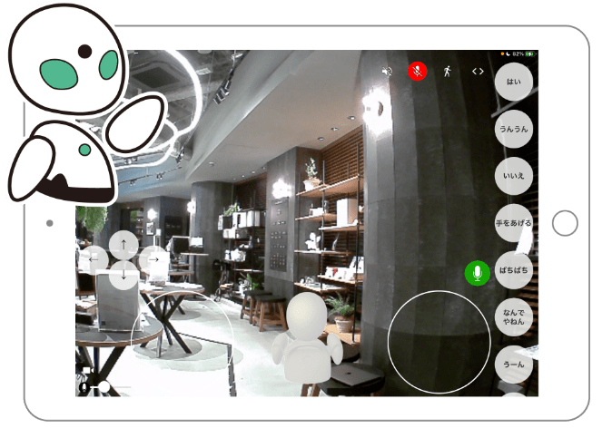
Estos robots están ubicados en el Dawn Cafe
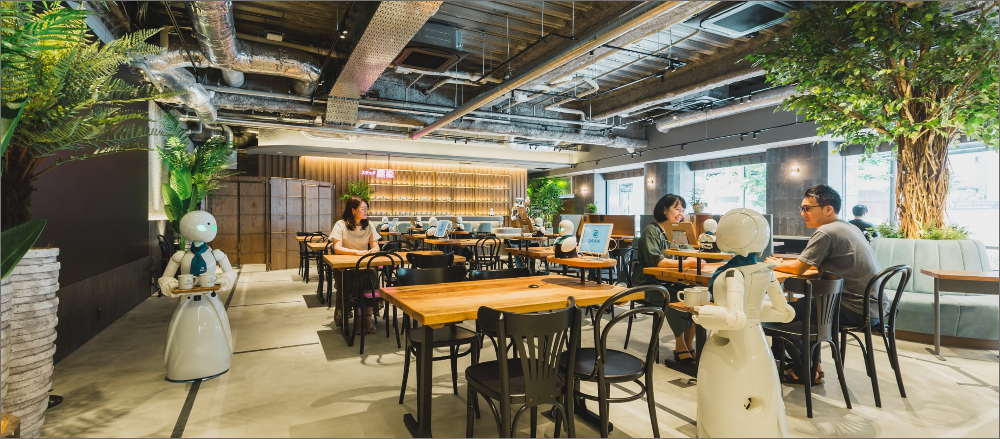
El “Avatar Robot Café DAWN ver.β” es un café experimental permanente operado por OryLab Inc., donde personas que tienen dificultades para salir de casa por diversas razones operan de forma remota nuestros robots avatar OriHime y OriHime-D desde sus hogares y hospitales para brindar servicios. ("Avatar Robot Café" n.d.)
Restaurantes y Robots en Chile
En Chile se han utilizado robots animatrónicos como el conocido restaurante "África" de Viña del Mar (SoyChile, 2019).
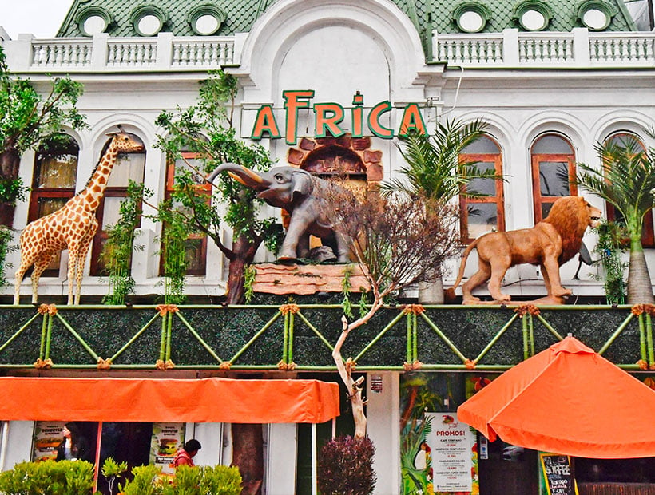
Jorge Fernández, gerente de El Japonés de Viña del Mar, calcula que desde que tienen al “Michi-robot” haciendo las veces de mesero la afluencia del público al local ha aumentado en un 20 por ciento. ¿La razón? La curiosidad de ver en acción al Bella-bot -o “Michi”, como le llaman en el restaurante-, que lleva pedidos a la mesa como un garzón más. (Transformadores, 2023).
Descripción del Proyecto
Como se puede apreciar, Chile está preparado para adoptar la inclusión de robots en el área de servicios, especialmente en robots meseros. Sin embargo los altos precios de adquisición impiden que más restaurantes adopten estas tecnologías.
Para lograr disminuir la brecha tecnológica y aumentar la inclusión de personas con dificultades de trabajar presencialmente, se debe crear una alternativa de bajo costo e identidad local.
Para esto se creará un "Avatar Robot" controlado remotamente via internet que pueda ser usado para atender comandas y servir como garzón en restaurantes.
Materiales
Este robot utilizará materiales reciclados o fáciles de adquirir a un costo moderado.
Marco
Para el marco principal se debe considerar una estructura liviana que permita un movimiento para todas las direcciones, cuente con un lugar para dejar los platos y sea higiénica y estéticamente apropiado.
Queda a discreción la selección del marco inicial. Acá se presentará unas opciones posibles.
| Nombre | Fotografía | Descripción |
|---|---|---|
Estante de Almacenamiento con Ruedas Giratorias y Cestas Metalicas |
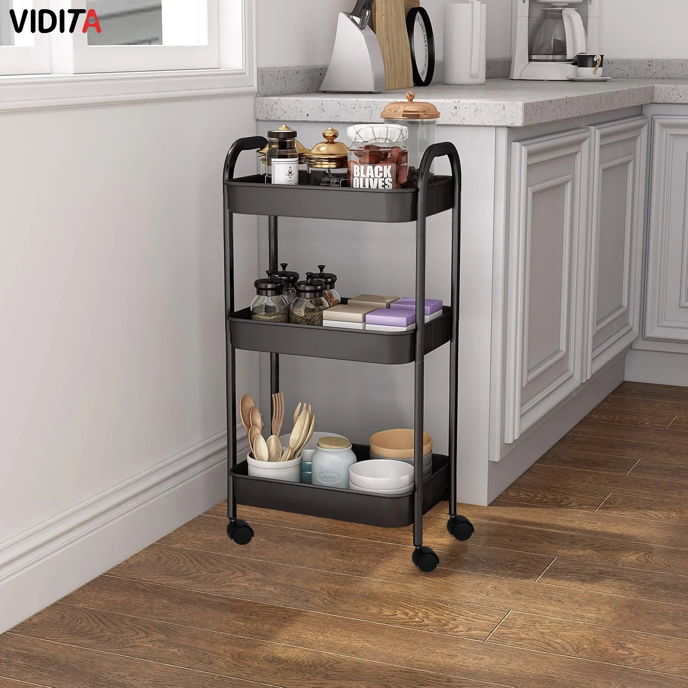 |
Carrito Organizador Con Cesta Metal y Ruedas Bloqueables 3 Niveles
|
Organizador de frutas metal 3 canastos Cromado |
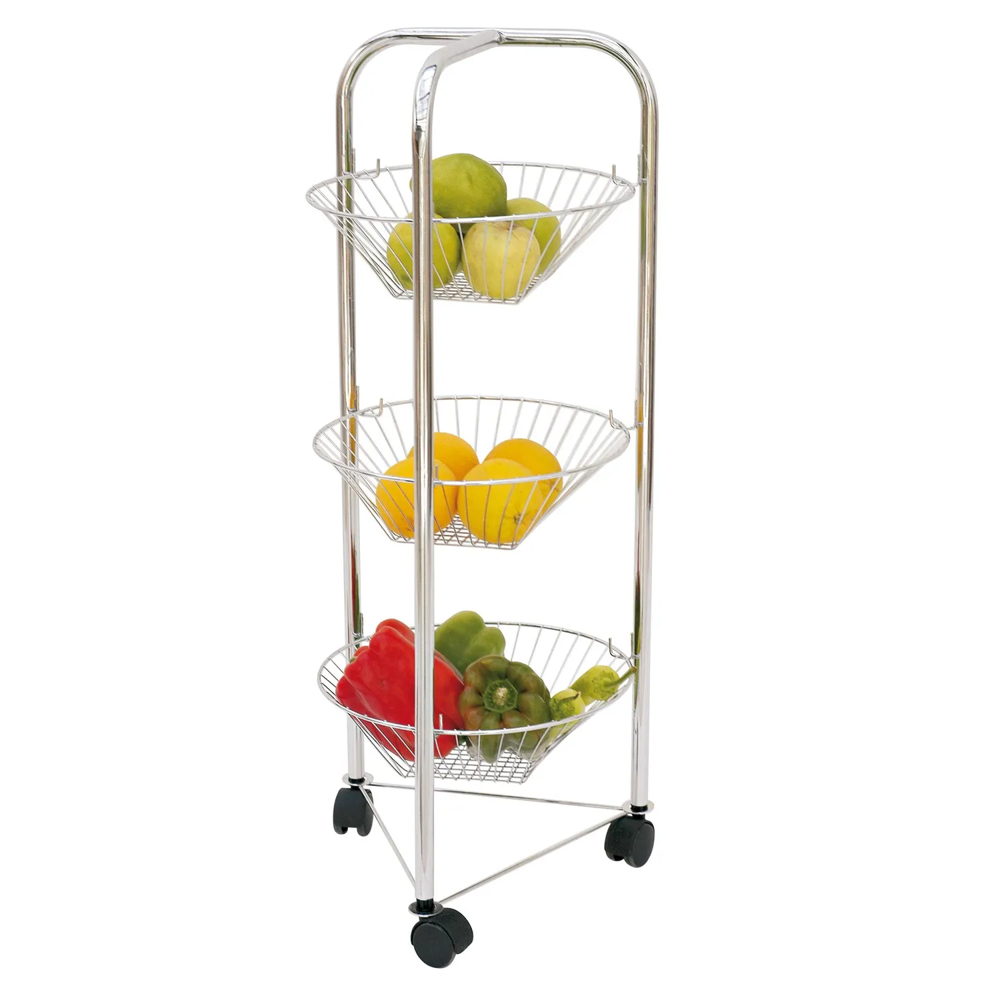 |
La Frutera con 3 canastos y 3 ruedas en la parte inferior.
|
Carro de compras colores 32 L |
|
Carro de compras colores 32 L
|

La recomendación es que permita al menos 3 niveles. Ya que se necesita espacio para:
-
La batería y circuitería. Ubicados en el nivel inferior.
-
La bandeja principal para almacenar los platos a servir.
-
Una bandeja superior para almacenar la cámara y un robot o pantalla opcional para expresar emociones por parte del piloto operador.
El carro será controlado por una ESP32 que recibirá comandos por USB desde la Raspberry PI.
Batería
La batería puede ser un PowerBank o una batería de motocicleta con un adaptador para USB. Es importante recalcar que el amperaje mínimo necesario es 3 amperes. Menor a ese amperaje servirá para cargar un smartphone, más no para alimentar una Raspberry PI.
| Opción | Imagen | Descripción |
|---|---|---|
PowerBank de 30K mAh |
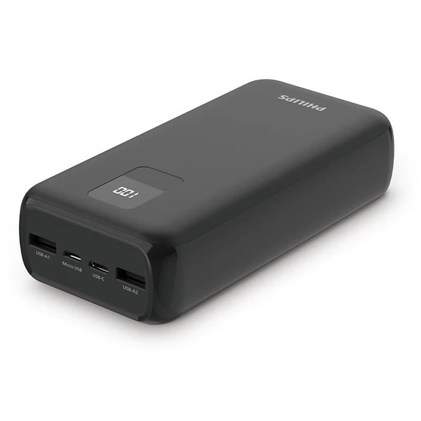 |
Batería portátil USB capacidad de 30000 mAh. Tres puertos USB con USB-A y USB-C. Carga rápida del dispositivo con puerto USB-C PD 3.0 de máximo 20 W o USB-A con salida QC3/0 de máximo 18 W.
|
Batería 12v + Adaptador USB |
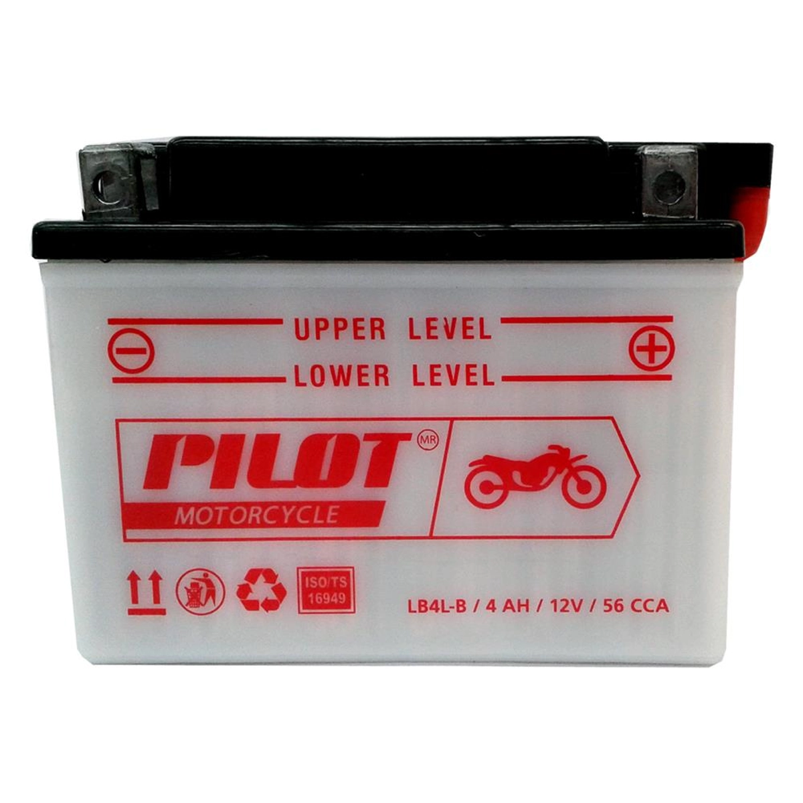 |
Batería de motocicleta combinada con un adaptador USB de alta potencia (QC3.0). Es una opción válida para alimentar el robot. Ventajas:
Desventaja:
Disponible en: |

Smartphone
El Smartphone es necesario para proveer internet a la Raspberry PI y también actuar como cámara principal para la comunicación remota (utilizando una video llamada).
Se recomienda un smartphone Android. Cualquiera que pueda hacer uso de redes 3G y sea relativamente moderno (entre 5 a 10 años de antigüedad) servirá como principal puente de comunicación.
Se podría omitir este elemento si el restaurante cuenta con Wifi y añadir una cámara web a la Raspberry PI, pero requeriría de mayores configuraciones en el router del local y asegurar estabilidad de señal.
Para la elaboración de la comunicación via video se utilizará los servicios de Jitsi Meet. El cual proporciona una solución de bajo costo y de código libre para ser utilizada.
Raspberry PI 3
Raspberry PI 3 cuenta con un procesador Broadcom Quad-Core ARM Cortex-A53 a 1.2GHz combinados con 1GB de RAM LPDDR2.
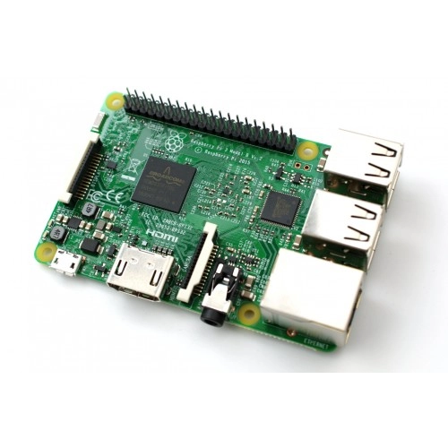
Será el computador principal conectado con Nerves, lo que permitirá enviar señales tanto al Emote Robot como al Carro utilizando USB, además de proporcionar un servidor web accesible mediante internet conectándose al Smartphone.
-
Sistema Nerves: https://github.com/nerves-project/nerves_system_rpi3
-
Disponible en: https://altronics.cl/raspberry-pi-3-modelb-old?search=raspberry&page=4
El modelo de Raspberry Pi es a elección, simplemente debe ser compatible con Nerves (https://hexdocs.pm/nerves/supported-targets.html) Un modelo alternativo compatible es el Raspberry Pi Zero 2W.
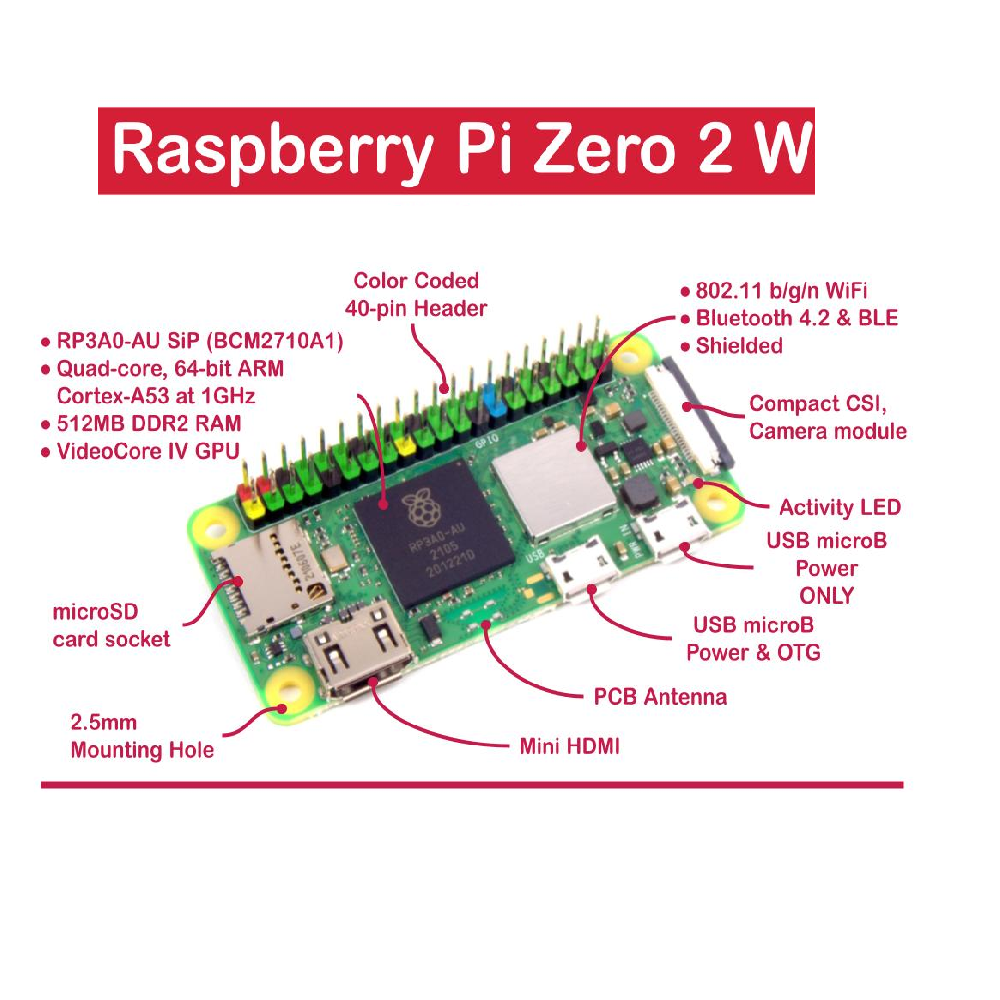
-
Disponible en: https://mcielectronics.cl/shop/product/33107/
Emote Robot
Para proporcionar una forma de mostrar emociones remotamente se puede utilizar un personaje de lego animatrónico. Esto es totalmente opcional, pero agrega personalidad y empatía al robot. También puede ser utilizada una smart tablet con un personaje animado y controlado remotamente.
Puede ser adquirido en https://www.tiendalego.cl/collections/creator-3in1/products/dragon-rojo-31145
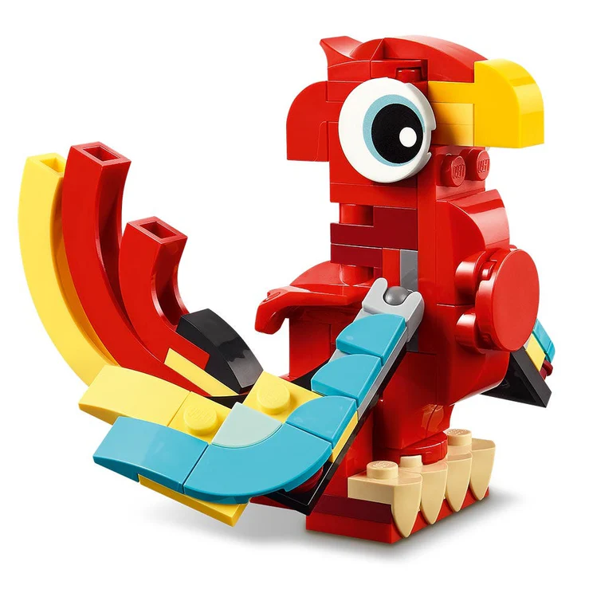
El robot será controlado por una ESP32 que recibirá comandos por USB desde la Raspberry PI.